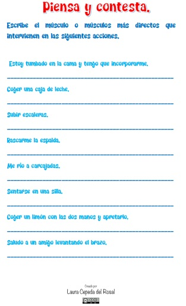
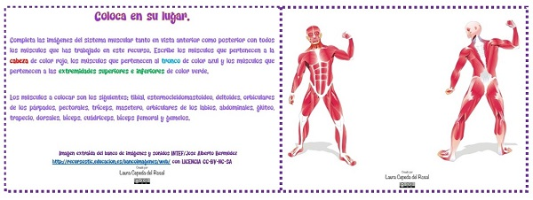

¿Tienes dudas? Disfruta de tu COMODÍN
Si tienes alguna duda en las actividades que debes realizar, o no entiendes algo del texto inicial, busca a la profe y plantearle la duda para que te ayude a resolverla.
Si tienes alguna duda en las actividades que debes realizar, o no entiendes algo del texto inicial, busca a la profe y plantearle la duda para que te ayude a resolverla.
Lee atentamente los siguientes enunciados e indica si son verdaderos o falsos.
Falso
El sistema muscular está conformado por un conjunto de músculos.
Verdadero
Falso
El músculo está compuesto por tejidos musculares, y la unión de todos esos tejidos forma los músculos.
Verdadero
El tejido muscular tiene cuatro funciones, entre ellas la de poder contraerse.
Falso
Los músculos involuntarios son aquellos que realizan movimientos sin que nosotros seamos conscientes de ello.
Falso
Dentro del aparato locomotor, distinguimos tres tipos de tejido muscular: estriado o esquelético, liso y cardiaco.
Verdadero
Falso
Los tendones son tejidos en forma de bandas, muy resistentes.
Verdadero
Verdadero
Verdadero
Observa la imagen y escribe correctamente el nombre del músculo.
En esta actividad tienes que poner en práctica lo que has aprendido en este recurso a través de tu cuerpo, para, de esta manera, tomar conciencia de los músculos del mismo.
La actividad será por parejas. Un miembro de la pareja debe decirle a su compañero nombres de músculos y este debe realizar una contracción de ese músculo para tomar conciencia de dónde está y de toda la zona de su cuerpo, la cual se contrae y se pone más dura.
Los músculos que vais trabajar son los estudiados en este recurso.
A continuación, te propongo una lista para esta actividad:
Lee las oraciones que encontrarás a continuación y elige la opción correcta de entre las que se desplegarán.
En esta actividad vas a comprobar si has entendido y aprendido de manera correcta lo trabajado en este recurso.
Vas a encontrar diferentes acciones que hacemos en el día a día y debes escribir el músculo que interviene. Debes pensar en el músculo o músculos más específicos que intervengan en esa acción.
Quizá te ayude realizar esa acción para descubrir qué músculo o músculos intervienen en la misma.
A continuación, puedes ver una imagen de la ficha de trabajo.

Aquí puedes descargar el PDF de la ficha de trabajo.
Aquí puedes descargar el PDF de la solución de la ficha de trabajo (solo para el profesor).
Pulsa sobre este enlace y encontrarás un juego. A ver quién gana!!
A continuación, tendrás que poner en práctica lo aprendido en este recurso.
Coloca en el lugar correspondiente todos los músculos que has trabajado en el mismo. Tanto en su visión anterior (por delante) como en su visión posterior (por detrás).
En la ficha de trabajo tienes los nombres de todos los músculos que has de colocar.
Cuando hayas terminado pega la ficha de trabajo en tu cuaderno para que puedas consultarlo siempre que lo necesites.
A continuación, puedes ver una imagen de la ficha de trabajo.

Imágenes extraídas del Banco de imágenes y sonidos (INTEF)/ Jose Alberto Bermúdez (http://recursostic.educacion.es/bancoimagenes/web) con licencia CC-BY-NC-SA
Aquí puedes descargar el PDF de la ficha de trabajo.
Aquí puedes descargar el PDF de la solución de la ficha de trabajo (solo para el profesor).
Obra publicada con Licencia Creative Commons Reconocimiento Compartir igual 4.0
{kind=link}
{kind=link}
{kind=link}
{kind=link}
{kind=link}
{kind=link}
{kind=link}
{kind=link}
{kind=link}
{kind=link}
{kind=link}
{kind=link}